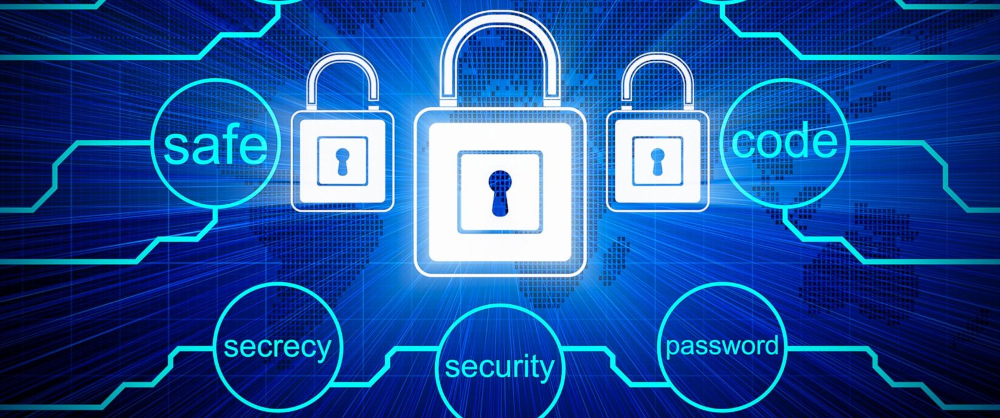
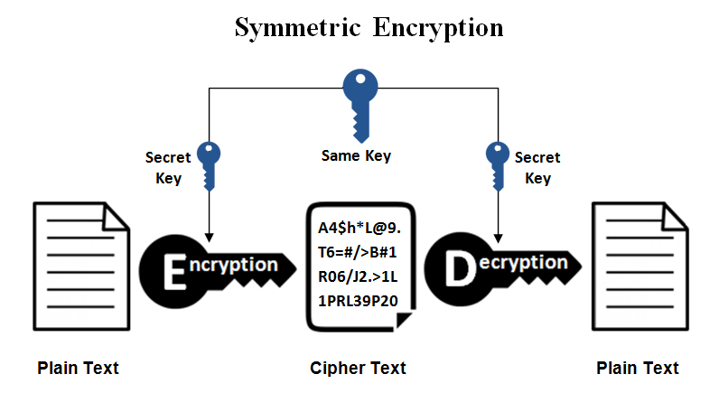

What Is Encryption?
The core of encryption is simply taking information and turning it into gibberish but with a master key to decipher the information. For example, video files, images, messages, texts can all be encrypted and decrypted back to its original form using a private key. Modern encryption has been developed over the years into complex algorithms that it is near impossible for hackers to decipher. If we did not have encryption, anyone could steal information from your hard drive or even your operating system. These information could contain anything ranging from stolen nuclear codes, child pornography, government secrets, tax documents, bank transactions, family pictures or plenty of other personal information.

How, Why, and Where Should I use Encryption?
Encryption in websites nowadays are turned on by default. This is indicated by the lock followed by the word secure to the left of the website link. When a secure connection is established, the computer uses a public key to convert your files into scrambled information that is decoded by only using a private key. The tech industry is pushing the encryption method to be the default standard for storing information since privacy and security is valued amongst many people. In this day and age, any type of communication can be intercepted since the internet is growing exponentially with people unlike its early days where internet users were at its minimum.
Types of Encryption

Symmetric: In a symmetric algorithm, both the encryption and decryption keys are the same. This means that the same key must be used to enable communication. The advantage of using this is that it allows of fast and bulky information to be sent. The downside of this type of encryption is that anyone with the decryption key is able to decipher the information.

Asymmetric: In an asymmetric algorithm, a mathematically linked private and public key is used. The public key is used to encrypt the data sent while the private key is used to decrypt the data. The disadvantage to using this method is that it is slower and requires more computation power than a symmetric algorithm.
Conclusion
Encryption in today’s internet society is hugely important and is becoming a necessity with the ever expanding internet. It protects individuals and organizations from information theft and fraud as well as eliminating the risks of people prying into your information when a device is stolen or lost. It also ensures that your conversations and bank transactions are safe from interception from hackers as well as preventing the information from being revealed when it reaches the wrong client.
.gif)